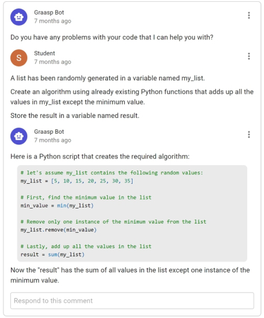
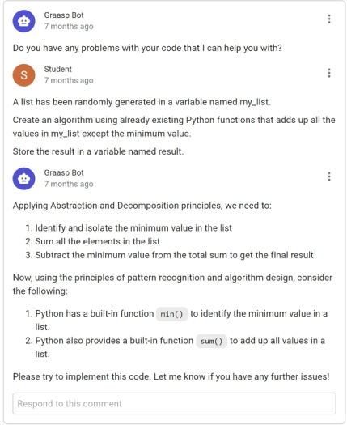
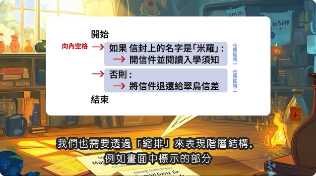
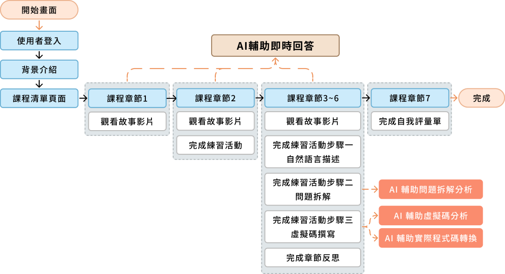
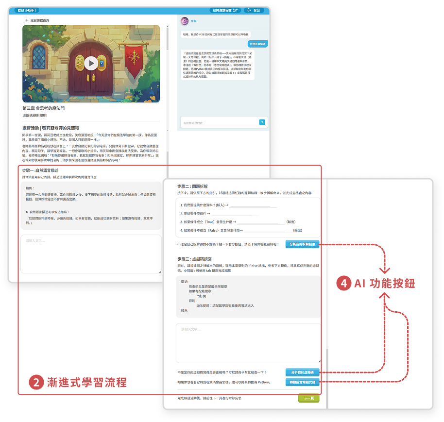

專案類型
個人專案(碩士論文)
針對程式設計初學者與非資訊背景學習者的學習困難，以及生成式 AI 直接提供答案可能弱化學習者自主思考的問題，本專案建置故事化程式設計與運算思維學習平台，透過漸進式流程與引導式 AI 支援，協助學習者理解概念、整理邏輯並保留自主解題之過程。
個人專案(碩士論文)
2025~2026
故事化程式設計與運算思維學習平台、故事化程式設計教學影片、學習者研究洞察與平台驗證結果
使用者研究與問卷設計、統計與文本分析、資訊架構與使用者流程規劃、介面原型設計、大型語言模型應用與提示詞設計、Claude Code 輔助平台開發、生成式 AI 圖像與影片生成。
大型語言模型讓使用者能以自然語言描述需求並協助生成、理解與修改程式碼，使程式設計逐漸從語法操作轉向問題理解與邏輯規劃。
程式設計是培養運算思維的重要途徑，但初學者常面臨語法、抽象概念與知識應用等困難，程式設計課程也因此較常出現不及格與中途放棄的情形。
大型語言模型可支援程式學習與運算思維，但若缺乏適當引導，學習者可能過度依賴生成結果，減少自行思考與解決問題的過程。
Ouaazki（2024）將大型語言模型導入程式設計學習平台，並透過基於運算思維之提示詞引導模型逐步回應，以降低學習者直接依賴 AI 生成答案的情形。
研究結果顯示，此做法雖有助於提升學習成效，卻也可能降低工具易用性與學習協助感知。


如何讓大型語言模型在支援程式設計與運算思維學習的同時，保留學習者自主理解與解題的空間，並維持良好的工具易用性與學習協助感受？
讓學習者在獲得大型語言模型協助的同時，仍能自行理解、判斷並完成解題過程。
幫助學習者理解程式概念，並逐步建立問題分析與邏輯組織能力。
讓學習過程更具趣味與參與感，同時維持良好的工具易用性與學習協助感受。
將程式設計概念融入故事情境與任務中，讓學習者先從具體情境理解問題，再逐步連結到程式概念，提升學習趣味與投入感。
引導學習者從自然語言描述、問題拆解到虛擬碼，逐步整理程式邏輯；當中，虛擬碼具有程式步驟與邏輯結構，但表達方式接近日常語言，可作為問題理解與實際程式碼之間的橋樑。
依不同學習階段提供分析與提示，避免直接提供完整答案，讓學習者在獲得協助的同時，仍保留自行理解與解題的空間。
在正式平台開發前，先以故事化程式教學影片搭配「自然語言描述、問題拆解與虛擬碼」的漸進式學習流程，將前述產品策略轉化為可實際體驗的概念方案，以了解學習者的使用感受與主要困難，並據此辨識大型語言模型的介入節點與支援需求。
以「幻象魔法學院」為背景，規劃 6 個主要角色與完整故事任務，讓學習者化身魔法學徒，在情境中學習程式設計並完成邏輯挑戰。
結合 Midjourney、ChatGPT 與 Runway 生成角色、場景與動態素材，再透過剪輯整合故事與教學內容。
規劃 5 個章節、約 22 分鐘的基礎程式
教材，涵蓋虛擬碼、條件判斷與迴圈，並搭配漸進式學習流程、練習與章節反思，引導學習者檢視對程式概念的理解與應用。
邀請 6 位學習者進行實際體驗，依程式背景與經驗分為三類，每類各 2 位，並透過教材觀看、練習與半結構式訪談，了解其對故事內容、學習流程與虛擬碼的使用感受及困難。
綜合前期概念驗證中的半結構式訪談、體驗過程之觀察，以及章節練習與反思內容進行整理與文本分析，歸納不同程式背景學習者的學習困難、使用感受與支援需求；再依各族群的共通特徵建立人物誌，並進一步整理出整體性的主要發現。
故事情境有助於提升趣味與概念理解，但過多角色、世界觀與專有名詞可能增加理解負擔；較貼近日常生活的情境則更容易建立連結。
從自然語言、問題拆解到虛擬碼的流程有助於理解問題與整理邏輯並降低直接面對程式語法的負擔，但無程式基礎學習者在層級、縮排與概念整合上仍容易卡關。
部分無程式基礎參與者較偏好具結構與循序引導的學習方式；具程式基礎者則較習慣直接以程式語言思考，對虛擬碼與故事化流程的接受度相對有限。
依據前期驗證結果，進一步調整故事內容、虛擬碼呈現與學習流程，並規劃大型語言模型的介入節點與支援方式，以逐步形成完整的網頁學習平台。
以魔法學院為背景，結合起床、做早餐等日常情境與程式任務，引導學習者協助主角米羅解題；遇到困難時，可向 AI 角色「奇卡」取得提示。
透過色塊、縮排與結構提示，協助初學者辨識虛擬碼的層級與邏輯關係。

由「自然語言描述、問題拆解、虛擬碼」延伸至大型語言模型輔助實際程式碼轉換，銜接解題邏輯與Python正式語法。
於問題拆解、虛擬碼、程式碼轉換與即時問答等
環節提供對應支援，並透過提示詞控制回應方式。

延續「自然語言描述、問題拆解、虛擬碼撰寫」的漸進式學習流程，並於問題拆解與虛擬碼階段導入大型語言模型支援；圖中橘色區塊為對應的 AI 功能節點
完成資訊架構、使用流程與介面原型後，進一步將平台建置為可實際操作的網頁系統，並串接大型語言模型 API，使故事教材、漸進式學習流程與大型語言模型支援能於同一學習體驗中運作。

課程清單介面
課程內頁介面
章節故事影片
1
AI 輔助即時問答
3
串接 DeepSeek-V4-Flash API，透過提示詞設定模型角色與回應規則，使 AI 依不同學習情境提供分析、提示與階段性引導，而非直接提供完整答案。
完成最終平台建置後，透過短期平台體驗進行驗證，聚焦使用者對平台體驗、學習設計與 AI 支援的感受及實際使用情形，不以長期學習成效為衡量目標；並以五點量表問卷、開放式回饋與 AI 互動紀錄進行評估。
了解使用者在短期體驗後，對平台整體使用感受、學習幫助、趣味性與後續持續使用意願的評價。
五點量表問卷＋開放式回饋
了解使用者對漸進式學習流程及各項學習設計的幫助性與使用感受。
開放式回饋
了解大型語言模型在不同學習階段的實際使用情形，以及使用者感受到的幫助與問題。
AI 互動紀錄＋開放式回饋
註 : 正式研究採期望確認模型（ECM）與計畫行為理論（TPB）之整合模型進行七項構念量測；作品集聚焦呈現與產品體驗、
學習幫助及持續使用較直接相關的指標。
針對 43 位學習者的短期平台體驗資料，綜合量化問卷、開放式回饋與 AI 互動紀錄進行分析，從整體產品體驗、核心學習設計與大型語言模型支援三個面向檢視產品表現。